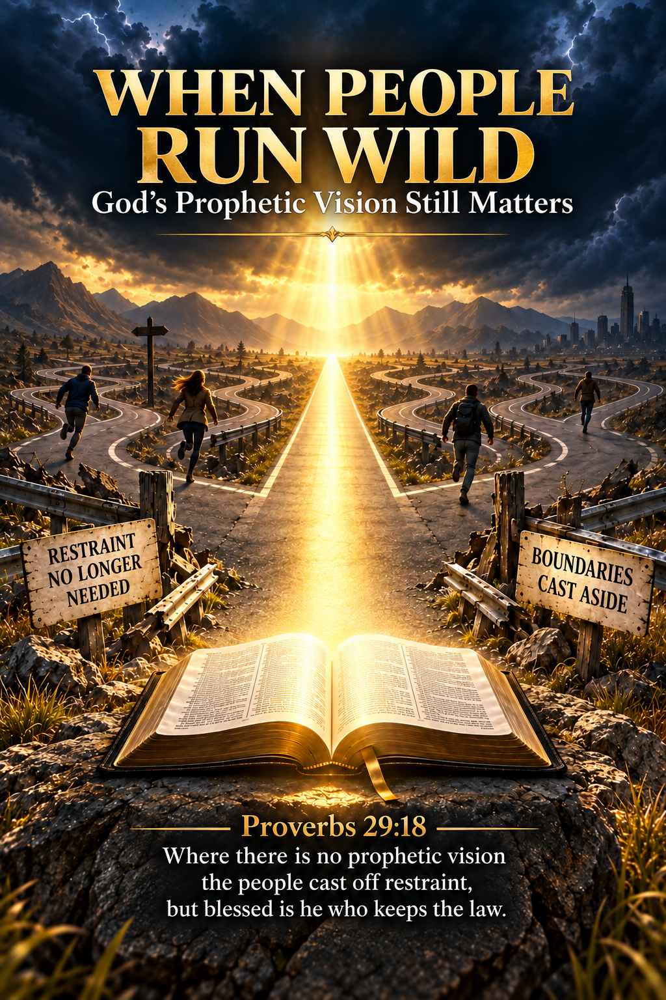

Featured Message • Read-Along Podcast
When People Run Wild
God's Prophetic Vision Still Matters

Discover what Proverbs 29:18 means by vision, why people cast off restraint without God's revealed truth, and why those who keep His instruction are blessed.
Read-Along Podcast
Listen as Lesli D. Mize narrates this featured message.
Whenever I study Scripture, I begin by identifying the key words in the passage. Looking at their Hebrew or Greek meanings often brings greater clarity and depth. Because the everyday meanings of English words change over time, our modern understanding may not fully reflect what the biblical writers intended. For that reason, I find it helpful to return to the original languages and consider how the words were understood in their ancient setting. Sometimes one little word opens the door to a much larger truth and occasionally shows that our modern dictionary has led us slightly off course.
I used this same method while examining Proverbs 29:18. Although it is a short verse, it certainly packs a punch, especially when it challenges some common misunderstandings. As we will discover, this familiar verse may not be saying exactly what many of us have long assumed.
Several key words in this verse do not carry the meanings we usually give them in modern American English. Reading today's definitions back into the ancient text can distort its message. Some advocates of the church-growth movement have repeated these interpretations to support human plans and goals. Whether this comes from careless interpretation or intentional misuse, it can mislead believers about what the proverb truly says.
Key Words in Proverbs 29:18
Here are the five keywords with their meanings:
- VISION (חָזוֹן, chazon, Strong’s H2377): A prophetic revelation or message received from God—not a personal dream, ambition, or organizational goal.
- PEOPLE (עָם, ʿam, Strong’s H5971): A people or community. The Hebrew does not say "My people" or name a particular nation; it speaks of people in general.
- UNRESTRAINED (יִפָּרַע, yipparaʿ, from paraʿ, Strong’s H6544): To loosen, let go, or cast off restraint. The KJV translates it as “perish,” but the word does not primarily mean “die.”
- LAW (תּוֹרָה, torah, Strong’s H8451): God’s direction, instruction, or revealed truth—not merely legislation or a legal code.
- HAPPY (אַשְׁרֵהוּ, ashrehu, Strong’s H835): An expression of blessing: "How blessed is he!" It describes more than a passing feeling of happiness.1
The Meaning of Vision
Since vision stands at the heart of this verse, let us look at it more closely. The Hebrew noun chazon (khaw-ZONE) comes from chazah, meaning "to see" or "to behold." Strong's Lexicon defines chazon as "a sight (mentally), a dream, revelation, or oracle." In Proverbs 29:18, it refers to a message revealed by God, not a person's ambition, ministry plan, or dream of future success.2
Bible translations use words such as vision, revelation, and prophetic vision. Although the wording differs, the basic meaning is the same: God communicating His message through His appointed prophets. Revelation is truth that originates with God, and God makes it known. It does not begin as an idea, goal, or vision created within the human mind (2 Timothy 3:16; 2 Peter 1:20–21; Hebrews 1:1–2).3
How Scripture Uses Chazon (Vision)
To understand the meaning of chazon in Proverbs 29:18, we must examine how Scripture uses the word. Although each use involves revelation from God, the context determines the particular form that revelation takes. Scripture uses chazon in four primary ways:
- A supernatural vision: Something a person sees while receiving a prophetic message (Daniel 8:1-2).
- A vision during the night: A revelation received in a dream or nighttime vision (Isaiah 29:7).
- A message from God: This is the meaning used in Proverbs 29:18. God revealed truth through His prophets (1 Samuel 3:1; Habakkuk 2:2-3). Scripture also warns about false prophets who claimed that their own ideas came from God (Jeremiah 14:14; 23:16).
- The title of a prophetic writing: The word can introduce a written message from God, such as "the vision of Isaiah" or "the vision of Obadiah" (Isaiah 1:1; Obadiah 1:1).4
Taken together, these uses show that chazon is connected with prophetic revelation. In Proverbs 29:18, it refers to truth that originates with God and is made known through His appointed servants. It carries God’s authority and is closely connected with “the word of the LORD.” It does not refer to a personal dream, human ambition, ministry goal, or organizational plan.
The People in Proverbs 29:18
Having established the meaning of vision, the verse directs our attention to the people affected by its presence or absence. One common misquotation used by some ministers is, “Where there is no vision, My people perish.” I had often heard the phrase stated this way and believed the verse referred specifically to God’s people. However, Proverbs 29:18 does not say “My people.” The Hebrew word refers to people or a community in general without identifying one particular nation or group. Therefore, the warning applies wherever people reject God’s revealed truth and cast off restraint.5
From Vision to Restraint
Once we understand what the verse means by vision and people, a familiar sermon may begin to sound quite different. How often have you heard Proverbs 29:18 proclaimed with great intensity, followed by the insistence that everyone must “catch the vision”? And what vision are they expected to catch? Usually, it is the leader’s plan for growing the church—or, more specifically, growing their church.
Remarkably, this same minister may rarely use the King James Version in an ordinary sermon, but for this particular message, the KJV suddenly becomes the translation of choice. With great enthusiasm, they proclaim, “Where there is no vision, the people perish,” and then stop—as though the verse ended there. Yet the omitted second half is essential to understanding the first.
The Hebrew word translated as perish does not primarily mean that people die or cease to exist. It comes from paraʿ, which means to loosen, let go, or cast off restraint. Without God’s revealed truth, people are left without His direction and begin to run wild, choosing for themselves what is right and wrong. This is why many modern translations say that the people “cast off restraint” or “run wild.” The problem is not that they failed to embrace a leader’s plans; it is that they rejected God’s instruction.6
We can see echoes of this in America today. Various political, social, and cultural factions promote competing visions, creating tremendous division. Each group may be convinced that its own way is right, but a human vision is not the same as God’s prophetic revelation. When God’s truth is rejected, restraint begins to disappear, and people do what is right in their own eyes (Judges 21:25).
Instruction and Blessing
Yet Proverbs 29:18 does more than describe the problem; it also points us toward God’s answer. The second half turns our attention from people who cast off restraint to the person who keeps God’s law. The Hebrew word is torah, meaning direction, instruction, or teaching. It refers to more than a list of laws or legal requirements; it describes the truth God gives to direct His people. The contrast is clear: without God’s revealed truth, people cast off restraint, but those who honor His instruction are blessed.7
This leads us to the final keyword, happy. The verse declares, “But happy is he who keeps the law.” The Hebrew expression carries the sense of “How blessed is he!” It describes more than a passing emotion or a cheerful response to pleasant circumstances. It speaks of the settled well-being of a person whose life is aligned with God’s truth.8
This blessing does not guarantee a life without hardship, nor does obedience earn salvation. Rather, the person who receives and follows God’s instruction has direction when others are running wild, wisdom for recognizing right from wrong, and assurance that comes from walking faithfully with God. While others choose their own way, the one who keeps God’s instruction remains within the safety of His revealed truth.
Paul helps us understand this principle by comparing the life of faith to an athlete competing within the rules of a contest.
The Athlete
Paul writes, “An athlete is not crowned unless he competes according to the rules” (2 Timothy 2:5). An athlete may possess extraordinary ability, but stepping outside the boundaries of the competition can still lead to disqualification.
God’s instruction likewise provides boundaries for His people. Believers obey Christ’s commandments—not to earn eternal life, but because we have received life through Him. His commands keep us walking faithfully as we “press on toward the goal for the prize of the upward call of God in Christ Jesus” (Philippians 3:14).
This picture of an athlete remaining within the boundaries reminds me of a personal experience from my years playing basketball. I was skilled, dedicated, and determined, but one heated moment caused me to step outside the rules and lose my place on the court. What followed taught me that picturing the desired outcome was not enough; restoration required correction, discipline, humility, and self-control. I will share the full story in the Go Deeper Podcast this Friday, along with a closer look at how the meaning of vision in Proverbs 29:18 has often been misunderstood.
Challenge
This week, examine which vision is directing your life. Are your choices being shaped by God’s revealed truth, or by personal ambition, popular opinion, and the competing voices around you? Identify one command of Christ that you need to follow more faithfully, and take one practical step of obedience. Keep His promised return and the hope of eternal life before you, allowing that truth to strengthen you when the world seems to be running wild.
Prayer
Heavenly Father, thank You for revealing Your truth and giving us direction through Your Word. Help us reject every vision that draws us away from You, obey the commandments of Christ, and remain faithful as we await His return and the promise of eternal life. In Jesus’ name, amen.
Footnotes
- “Proverbs 29:18 Hebrew Text Analysis,” accessed September 14, 2026, Bible Hub. ↩
- “Strong’s Hebrew: 2377. חָזוֹן (Chazon) — Vision, Visions,” accessed September 14, 2026, Bible Hub. ↩
- “Proverbs 29:18 Hebrew Text Analysis.” ↩
- “Strong’s Hebrew: 2377. חָזוֹן (Chazon) — Vision, Visions.” ↩
- “Strong’s Hebrew: 5971. עָם (Am) — People, Nation, Kinsfolk,” accessed September 15, 2026, Bible Hub. ↩
- “Proverbs 29:18 Hebrew Text Analysis.” ↩
- Tim Challies, “Proverbs 29:18 Meaning: ‘Where There Is No Vision, the People Perish,’” March 9, 2005, Challies. ↩
- “Strong’s Hebrew: 835. אַשְׁרֵי (Esher) — Blessedness, Happiness,” accessed September 15, 2026, Bible Hub. ↩
Build • Educate • Disciple
Colossians 1:28
Note: This publication is intended for educational and devotional purposes only. It is not intended to replace personal study of Scripture, pastoral counsel, or involvement in a local church.
Disclaimer: Views expressed are those of the author and are rooted in personal study and interpretation of Scripture. Readers are encouraged to examine the Scriptures carefully and prayerfully.
Copyright: © 2026 Lesli D. Mize, Balancing the Word Ministry. All rights reserved.
Scripture Copyright: Scripture quotations are from the ESV® Bible (The Holy Bible, English Standard Version®), © 2001 by Crossway, a publishing ministry of Good News Publishers. ESV Text Edition: 2025. The ESV text may not be quoted in any publication made available to the public by a Creative Commons license. The ESV may not be translated in whole or in part into any other language. Used by permission. All rights reserved.